Dogfood
A tiny desktop forge for building interface with Claude Code — a translucent, Cursor-style workspace where you prompt, build, and preview UI pieces inside the real repo.
Getting started
- Open a project folder with ⌘O — Dogfood works against your real repo, not a sandbox.
- Open the terminal with ⌘J and type
claudeto start Claude Code. - Prompt it to build a component; it edits files in place, where they belong.
The interface
- Title bar — app name, light/dark toggle, settings; thin like a native macOS window.
- Canvas — the calm, gridded stage where your component renders.
- Terminal panel — real shells in tabs; resize from the top edge, hide with the chevron.
- Status bar — a slim footer with quick state.
Terminal & themes
The terminal is a real shell (xterm + pty), with multiple sessions as tabs. Toggle light/dark with the sun/moon — dark is frosted glass, light is clean and bright. Grid stays in both.
Keyboard shortcuts
- ⌘J Hide / show the terminal
- ⌘P Search files
- ⇧⌘B Open browser
Components
Every building block of the app — current and planned — across each area. Filter by status or area, or search.
Architecture
The loop is the whole product: prompt → render → it's already in the repo.
┌─────────────┬──────────────────┐ │ terminal │ live canvas │ │ (claude) │ (the preview) │ │ you prompt │ hot-reloads the │ │ CC edits ──┼──> focus component│ └─────────────┴──────────────────┘ the real repo on disk
Stack
- shellElectron + Vite + React — desktop app, macOS vibrancy
- terminalxterm.js + node-pty — real shells; type
claude - themestoken-driven — light + dark glass via CSS variables
- previewembedded Vite + wrapper — renders the focus component (planned)
The preview wrapper Planned
A real component won't render without the project's styles & providers, so Dogfood will use a per-project wrapper file that wraps the focus component in the app's real context — set once per project.
Branding
Meet Cowboy — the good boy behind the name, and the face of Dogfood.


Wordmark & lockup
Lowercase dogfood in SF Pro, weight 700, tracking −0.03em.
Color
Usage
- Use the primary mark on light surfaces, the inverse on dark — both are self-contained.
- Don't recolor, stretch, rotate, or add effects to Cowboy.
- Don't place the dark mark on a dark background — use the inverse.
{kind=link}